Specialty Planning Analysis
Note that this section, in its power, flexibility, and sophistication is not necessarily an everyday use case. Instead, it illustrates how intricate and demanding requirements can be fulfilled – and more – within a OneStream application. This chapter differs from the others in its depth, complexity, and highly code-oriented nature. To best understand its content, read it while examining a live instance of the A Very Basic Sample application, and treat the following as what may quite possibly be the best technical documentation ever. |
Gentle Reader, in this chapter you have reached the culmination/the grand finale/the end of the saga of the previous chapters. All of those calculation Methods, models, and data points we discussed lead to a formatted Report or an unstructured analysis sheet or a graphical Dashboard. But data can only become actionable information if it is understood.
In this chapter, we shall cover:
Performing analysis using Pivot Grids.
Performing analysis and modifying Specialty data in the OneStream client Spreadsheet.
Supplemental data analysis without wreaking havoc on Stage.
Specialty Planning Analysis
Specialty Planning Data Analysis
A true analytic capability was lacking for Specialty Planning solutions until the release of OneStream 5.2. Your author considers slicing, dicing, and the ability to pick rows and columns of your choice to be the core of analysis (like an Excel pivot table). Yes, there were Grid Views, charts, and graphs, but really they were more like Reports; they were very limited in the way of analytic capabilities.
This absence of true analytical functionality spawned creative solutions. Your ever-curious author wonders how a solution like the one below (it did exist) might be valued by you, Gentle Reader.
In that wild world of not-that-long-ago, the below add-in could retrieve data from Specialty Planning relational tables (any relational tables, application or external) directly into Excel.
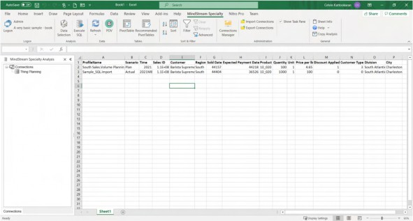
Figure 6.1
Once retrieved, Specialty Planning’s fields could be dragged, dropped, filtered, and sorted in a pivot table User Interface.
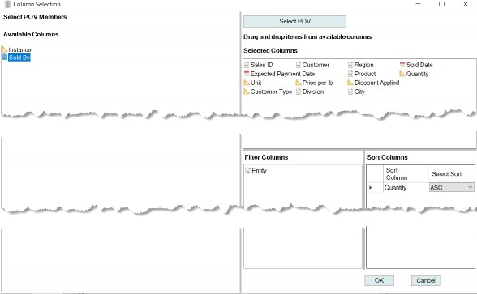
Figure 6.2
This add-in had a POV selector that worked in concert with the row and column editor.
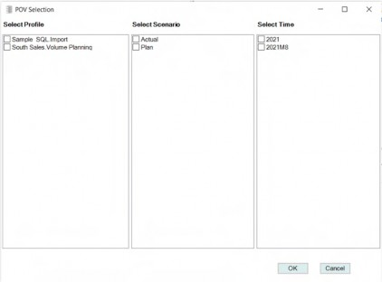
Figure 6.3
Once retrieved, the query data and metadata were stored in the Workbook to allow distribution to fellow Planners. If they had access, they could refresh the sheet to view/update that analysis.
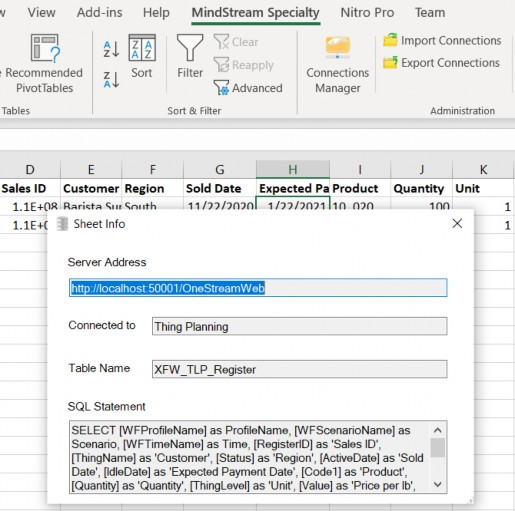
Figure 6.4
This solution, although intriguing in its possibilities, became somewhat redundant when OneStream 5.2 was released. 5.2’s release introduced Pivot Grids and Table Views and added some flexibility to Grid Views and SQL Table Editors.
That redundancy aside, an Excel-based data analysis canvas has its uses. Your author’s curiosity around the potential use of an add-in, such as the above, continues. Contact Celvin via LinkedIn or other means, and let him know your thoughts.
Specialty Planning Analysis › Specialty Planning Data Analysis
Grids and Interaction
Prior to version 5.2, Grid Views could be used to show data in a grid/table format. SQL Table Editor – while doing the same – also allowed you to edit the underlying data coming from a relational table. However, as a User, you could not change the appearance of what was shown on the columns of a Grid View/SQL Table Editor; you were always at the mercy of whoever created the view for you, hence making these two options “rigid”. That “rigidity” changed after the Save State option was added to the SQL Table Editor and Grid Views.
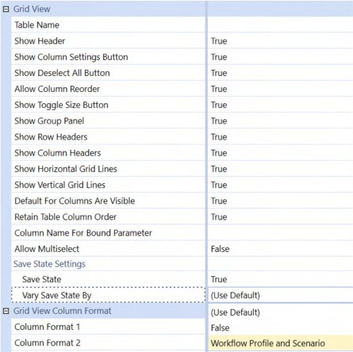
Figure 6.5
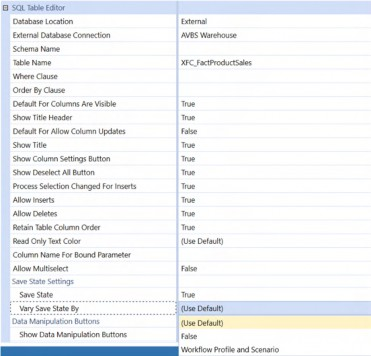
Figure 6.6
The Save State can vary by Workflow Profile and Scenario. Once enabled, Users will be able to change the order and hide/show columns.
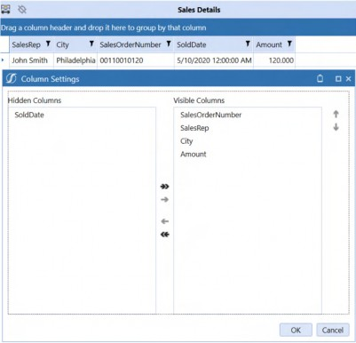
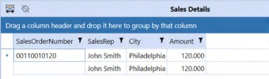
Figure 6.7
Note: In the SQL Table Editor, hiding columns that do not have a stored default value can cause NULL inserts, and the save operation will fail. Keep that in mind when enabling the Save State option. |
Specialty Planning Analysis › Specialty Planning Data Analysis
Pivot Grids
Everyone loves Pivot Grids or should. Gentle Reader, if you do not, you are missing out on a key piece of functionality that gives your Planners the ability to interactively analyze relational data in a powerful and intuitive manner.
Pivot Grids largely mimic Excel pivot tables. Given that both are addressing a normalized table (OneStream’s as a table; Excel’s as a worksheet, generally speaking), the use case and the interface are largely the same. They both provide a way to pivot the data against rows and columns and analyze them from different perspectives.
There are two Types of Pivot Grids in OneStream. Arguably, BI Viewer has one as well, but it does not fully fit the definition of a User-driven analysis as it is a catered Report.
Large Pivot Grids
Pivot Grids
They are both the same except that Large Pivot Grids can handle 20-40 times more data than Pivot Grids. Large Pivot Grids query the data directly from the tables/views, whereas Pivot Grids use a data adapter to get the data. Large Pivot Grids can support more data as they query on the fly. The Pivot Grid’s data adapter pulls all the data upfront, and hence supports a limited number of rows (100K rows).
Specialty Planning Analysis › Specialty Planning Data Analysis › Pivot Grids
When to Use Large versus Regular
Apart from the volume difference, there are other use cases that force a decision between Large and Regular Pivot Grids.
Consider a use case where you want to show data from two different tables, or you want the columns to have more sensible names (Product instead of UD1) or show Member descriptions. In this situation, the obvious choice is to create a data adapter and use the regular Pivot Grid.
However, if you are going against a large volume of data – and still want to achieve this – you will have to create a SQL view to perform transformations. Only then can a Large Pivot Grid be used.
Specialty Planning Analysis › Specialty Planning Data Analysis › Pivot Grids
How It Looks and What It Does
How does a Pivot Grid help analyze data?
Specialty Planning Analysis › Specialty Planning Data Analysis › Pivot Grids › How It Looks and What It Does
Regular and Large Pivot Grids
When creating a Pivot Grid, one can provide Users with a starting point by assigning SQL columns to rows/columns/data fields and grouping properties.
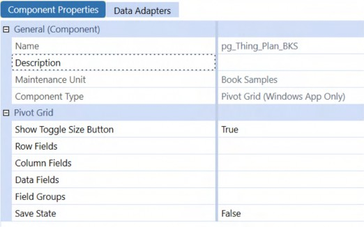
Figure 6.8
Alternately, Users could have a clean slate when opening a Pivot Grid to let them fully define its properties by leaving those fields and groupings blank.
Specialty Planning Analysis › Specialty Planning Data Analysis › Pivot Grids › How It Looks and What It Does
Large Pivot Grids
Large Pivot Grids allow the exclusion of columns from the analysis; regular Pivot Grids do not, as you are already controlling the columns using a data adapter.
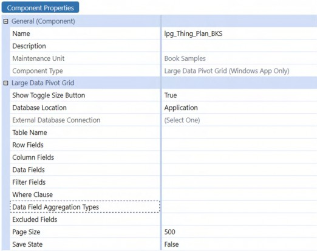
Figure 6.9
Specialty Planning Analysis › Specialty Planning Data Analysis › Pivot Grids › How It Looks and What It Does
Documentation and Further Reading
Use the Platform Guides documentation to learn more about the Component settings.
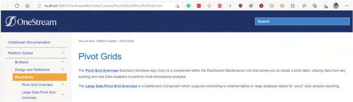
Figure 6.10
Specialty Planning Analysis › Specialty Planning Data Analysis › Pivot Grids › How It Looks and What It Does
Dragging and Dropping
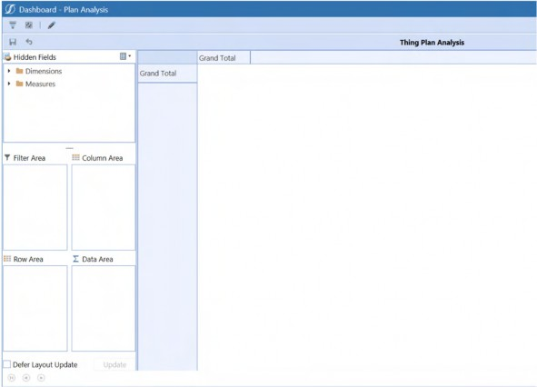
Figure 6.11
Both Types of Pivot Grids support dragging and dropping Dimensions to a Row/Column/Filter Area, and Measures to a Data Area.
If Save State is enabled, Planners can save their version of Analysis.
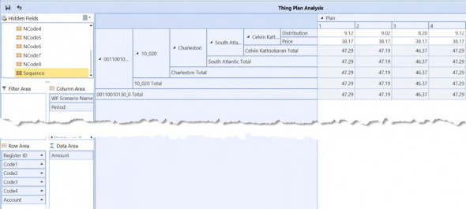
Figure 6.12
If they wish to return to the default setting, the Reset Pivot Grid to Component’s setting reverts things back to the Pivot Grid’s original state.
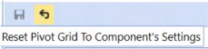
Figure 6.13
Specialty Planning Analysis › Specialty Planning Data Analysis › Pivot Grids
Adding Security to a Pivot Grid
C&CCC’s Users love their analyses, and they want to look at Volume Planning (Thing Planning) data and create their own versions of Reports while working within the company’s strict data security policies (defined in Slice Security (Data Cell Security) as discussed in the Core Planning II – Command and Control the Cube chapter. As an added security measure, Planners not involved in Volume Planning must have no access to this information.
The out-of-the-box analysis Reports that are part of Specialty Planning solutions are not appropriate for C&CCC’s Users because of the following reasons:
Plan Data is shown as an unalterable fixed grid.
Much of the information in the Register is not shown, e.g., Quantity, Expected Pay Date, etc.
Security is only by Entity.
Column names are not User-friendly.
With these requirements, this use case is a perfect example to drive the solution by going with a regular Pivot Grid, as discussed above, because a Large Pivot Grid requires creating individual SQL Views per User to fulfill the security requirements.
This view can now be complex with multiple UNION ALL statements to honor the Data Cell Security. These complex queries can lead to memory issues depending on the length of the UNION Statements.
A much more acceptable approach (other than saying it is not possible �) is to use a regular Pivot Grid, which uses a data adapter to fetch all of the rows that the current User can see, to satisfy the first and third use case requirements.
Specialty Planning Analysis › Specialty Planning Data Analysis › Pivot Grids › Adding Security to a Pivot Grid
How to Achieve This?
Now that we have finalized the Component to use (Regular Pivot Grid), we need to provide a data adapter for the Pivot Grid to show the data to be analyzed.
A data adapter can be created using five Command Types:
Cube View
Cube View Multidimensional
Method – an astounding 35 Method Types can be used. Most of them are documented in the data adapters section in the Platform guide.
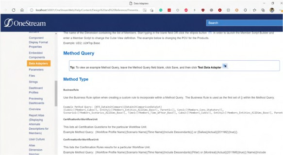
Figure 6.14
SQL
BI Blend
We are going to use Method as the Command Type and a Business Rule as the Method Type. This choice is made since the SQL required to generate the information is dynamic (it is based on the current User) in nature, and needs OneStream’s scripting capability for generating the SQL. The Business Rule that can be used in a data adapter is called as a Dashboard Dataset Rule.
Specialty Planning Analysis › Specialty Planning Data Analysis › Pivot Grids › Adding Security to a Pivot Grid › How to Achieve This?
Why This Rule and What Is It Doing?
A Dashboard Data Set Business Rule can return a DataTable back to the calling Component; in this case the data adapter.
We need to get the current User to read that User’s Entity access rights. With C&CCC’s strict security policies, the implementation of Data Cell Access Security requires that rule to read the slice information as well as to generate the retrieval SQL.
To facilitate C&CCC’s second requirement of analyzing Register-only information – like Expected Payment dates and Quantity – the Register Table (inputted or loaded data) must be joined with the Plan Table (the calculated results).
The fourth requirement of showing User-friendly column names is satisfied by aliasing the default columns to what is shown in the Register.
Here are the columns that are visible for a Planner in the Thing Planning Register.
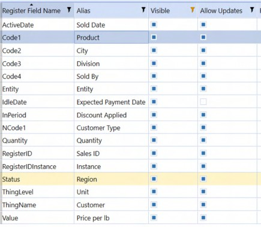
Figure 6.15
Aliasing the Columns and Joining the Tables
Details from the Register column and details from the Dimensions (Entity is Geography, UD1 is Products) as used to generate User-friendly columns.
Time and Scenario information are derived from the Planner’s Workflow. The Cube’s name is passed as a parameter to the Business Rule.
The next step is to generate a StringBuilder that can hold the columns and table information. This SQL acts as a universal column and table information for all Planners and Administrators alike.
Dim strTimeName As String = TimeDimHelper.GetNameFromId(si.WorkflowClusterPk.TimeKey)
Dim strScenarioName As String = ScenarioDimHelper.GetNameFromId(si, si.WorkflowClusterPk.ScenarioKey)
Dim strCubeName As String = args.NameValuePairs.XFGetValue("CubeName") Dim sqlColumns As New Text.StringBuilder sqlColumns.AppendLine("a.Entity as Geography, a.UD1 as Products, a.Account, a.Amount, b.Value as 'Price per Lb',") sqlColumns.AppendLine("b.Quantity, a.Code2 as City, a.Code3 as Division, a.Code4 as 'Sold By', b.IdleDate as 'Expected Payment Date',")
sqlColumns.AppendLine("b.ActiveDate as 'Sold Date',")Transformations
We need to perform a few transformations as the Register uses Control columns to show fields as dropdowns. Some of the fields like Discount Applied show as a Yes/No dropdown in the Register; however, a value of 1 is stored for Yes, and 0 for No.
SQL CASE statements are employed to convert the backend control values back to display values.
sqlColumns.AppendLine("CASE WHEN b.InPeriod = 1 THEN 'Yes' ELSE 'No' END as 'Discount Applied',")
sqlColumns.AppendLine("CASE WHEN a.NCode1 = 1 THEN 'Restaurant' WHEN a.NCode1 = 2 THEN 'Hotel' WHEN a.NCode1= 3 THEN 'Coffee Shop' END as 'Customer Type',")
sqlColumns.AppendLine("a.Status as Region, b.ThingName as Customer,") sqlColumns.AppendLine("CASE WHEN b.ThingLevel = 1 THEN 'Pounds' WHEN b.ThingLevel = 2 THEN 'Short Tons' WHEN b.ThingLevel = 3 THEN 'Tonne' END as Unit,")
sqlColumns.AppendLine("CASE WHEN Period=1 THEN 'Jan' WHEN Period=2 THEN 'Feb' WHEN Period=3 THEN 'Mar'")
sqlColumns.AppendLine("WHEN Period=4 THEN 'Apr' WHEN Period=5 THEN 'May' WHEN Period=6 THEN 'Jun'")
sqlColumns.AppendLine("WHEN Period=7 THEN 'Jul' WHEN Period=8 THEN 'Aug' WHEN Period=9 THEN 'Sep'")
sqlColumns.AppendLine("WHEN Period=10 THEN 'Oct' WHEN Period=11 THEN 'Nov' WHEN Period=12 THEN 'Dec' END as Months")The table values of 1 and 0 are transformed to Yes/No for Discount Applied (this is the repurposed
InPeriod column in the Register).
For the Customer Type, NCode1 is changed to the following names.
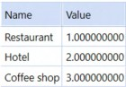
Figure 6.16
ThingLevel is used to show Units.
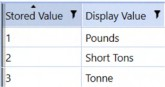
Figure 6.17
The Period column is converted to Month Name using the Month numbers present in the Plan table.
Joining the Tables
Once the required aliasing and transformations are done, we need to join the Register Table (inputted/loaded data) and the Plan table (calculated results).
sqlColumns.AppendLine("FROM XFW_TLP_Plan a, XFW_TLP_Register b") sqlColumns.AppendLine("WHERE a.WFTimeName='" & strTimeName & "'") sqlColumns.AppendLine("AND a.WFScenarioName='" & strScenarioName & "'")
sqlColumns.AppendLine("AND a.RegisterID= CONCAT(CONCAT(b.RegisterID,'_'), b.RegisterIDInstance)") sqlColumns.AppendLine("AND a.WFTimeName=b.WFTimeName") sqlColumns.AppendLine("AND a.WFScenarioName=b.WFScenarioName") sqlColumns.AppendLine("AND a.WFProfileName=b.WFProfileName")The Plan and Register tables are joined using RegisterID, RegisterIDInstance, Profile, Time, and Scenario. We are also showing the information from the current Workflow Time and Workflow Scenario.
Admins are Special
Administrators are not constrained by security as Planners are. The BRApi.Security.Authorization.IsUserInAdminGroup(si) Method determines if a username is in the default Administrator’s group or not.
Dim dt As New DataTable()
Using dbConn As DbConnInfo = BRApi.Database.CreateApplicationDbConnInfo(si)
If BRApi.Security.Authorization.IsUserInAdminGroup(si)
dt = BRApi.Database.ExecuteSqlUsingReader(dbConn, "SELECT " & sqlColumns.ToString, True)Creating The DataTable
Once the column information is populated, a new DataTable must be created to return the output of this function.
An application database connection is opened using the Using statement, which allows the querying of the application tables.
Administrators can see all of the information that is present in the Plan and the Register tables, which is why no additional WHERE statements are added to the StringBuilder. The same is not true of all other Users.
Users are Special, too
In the case of Users, C&CCC’s strict security policy does not allow anyone other than Volume Planning Users to read the detailed Volume Planning information. C&CCC’s Volume Planners are all part of a group called TLP_ALL_USERS.
Else ' if the user is not an Admin
If BRApi.Security.Authorization.IsUserInGroup(si, "TLP_ALL_USERS") Then
Dim cloneSQL As New Text.StringBuilder cloneSQL.AppendLine("SELECT Top (1)") cloneSQL.AppendLine(sqlColumns.ToString)
dt = BRApi.Database.ExecuteSqlUsingReader(dbConn, cloneSQL.ToString, True).Clone ' to set the structure for DTIf the User is not an Administrator, the code must check if they are Volume Planners.
Since the DataTable was created as a blank DataTable, it now needs the columns and their data Types. An easy way to perform this step is to run a query that returns that metadata.
To minimize the performance impact caused by pulling all the records to get the structure, issue a SELECT TOP 1 statement using the column information created above. Once a row is retrieved, the Clone Method applies the structure to the DataTable dt without copying the rows that are present in the source table.
If the User is not a Volume Planner, he or she will not get access, and the else condition is handled at the end of the code.
Read Entity Access and Data Cell Access Security
Once we confirm that the User is a Volume Planner, we need the Entity Access (Metadata security) information for the current User and the Data Cell Access security.
This information is added to a WHERE clause, and it acts as the security gatekeeper for the Pivot Grid.
Dim userWhereClause As New Text.StringBuilder
Once this test is complete, create another StringBuilder to add the User-specific WHERE clauses.
Dim lstParentGroups As List(Of Guid) = BRApi.Security.Admin.GetUser(si, si.UserName).ParentGroups.Keys.Select(Function(x) x).toList()
Identify all the groups the current User is a part of, in order to get the Entities the User can view.
Note: You could use AncestorGroups to get the nested group information if needed. |
Dim objCubeInfo As CubeInfo = BRApi.Finance.Cubes.GetCubeInfo(si, strCubeName)
The next step is to read the Data Cell Access items. To perform this, get the Cube information.
Dim userSliceAccess As List(Of CubeDataAccessItem) = objCubeInfo.Cube.CubeDataCellAccessItems.Where(Function(x) (x.AccessLevelInGrpInFilter = 1 OrElse x.AccessLevelInGrpInFilter = 2) And lstParentGroups.Contains(x.GroupUniqueID)).ToList()
Retrieve all the data cell access lines that are Read (1) or All Access (2) that are assigned to a group that the User is a part of.
Entities in Data Cell Access Security
C&CCC’s slice security information is done by a combination of Entity and Products (UD1) Dimension. The following code is going to read both Entity and UD1 Member Filters from the Data Cell Access categories the User is a part of, and adds them to a collection for further processing.
If userSliceAccess.Count > 0 Then
For Each objCubeDataCellAccessItem In userSliceAccessCheck whether the User is part of the Data Cell Access Security rows. If so, then loop through those items.
Dim lstEntity As New List(Of String)
A list for holding the Entities from Data Cell Access and the Entities the User has access to is created.
If Not String.IsNullOrEmpty(objCubeDataCellAccessItem.MemberFilters.Entity)
For Each entityFilter In objCubeDataCellAccessItem.MemberFilters.Entity.Split(",").Select(Funct ion(x) x.Trim)
lstEntity.AddRange(BRApi.Finance.Metadata.GetMembersUsingFilter(si, "Geography", entityFilter, True, Nothing, Nothing).Select(Function(z) z.Member.Name).ToList())
NextCheck whether any of those Entities are part of the Data Cell Access Security. If an Entity is present, then split the information using a comma and loop through them. Use the GetMembersUsingFilter Method to expand the Member Filter and add that to the Entity list.
West_Decaf Data Cell Access Security Category
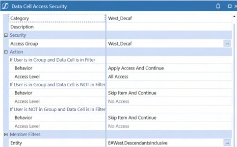
Figure 6.18
Using the example above, after the operation the Entity list will contain the following.
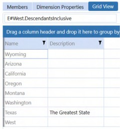
Figure 6.19
Else
For Each entMbrInfo As MemberInfo In BRApi.Finance.Metadata.GetMembersUsingFilter(si, "Geography", "E#Root.base", True, Nothing, Nothing).Where(Function(x) _ (lstParentGroups.Contains(x.Member.ReadDataGroupUniqueID) OrElse lstParentGroups.Contains(x.Member.ReadDataGroupUniqueID2) _
OrElse lstParentGroups.Contains(x.Member.ReadWriteDataGroupUniqueID) OrElse lstParentGroups.Contains(x.Member.ReadWriteDataGroupUniqueID2)) And x.Member.UseCubeDataAccessSecurity).toList()
lstEntity.Add(entMbrInfo.Member.Name) Next
End IfWhere there are no Entities in the Data Cell Access row, the User’s Entities must be interrogated, alongside whether these Entities are flagged to use Cube Data Access Security. The Entities that match both criteria are added to the list.
Adding to the WHERE Clause
Once the Entities from the Data Cell Access security are collected, they go to the WHERE clause.
If lstEntity.Count > 0 Then userWhereClause.AppendLine("AND " &
SqlStringHelper.CreateInClause("a.Entity", lstEntity.Distinct.ToList(), True, True)) End IfA SQLStringHelper is employed to create an IN clause. Your author finds this an easier approach than a String.Join Method as it is simpler to wrap the SQL items in single quotes (1st parameter) and escape SQL text (2nd parameter).
Similar steps are repeated for UD1 to get the Products that are part of the slice.
If lstUD1.Count > 0 Then userWhereClause.AppendLine("AND " &
SqlStringHelper.CreateInClause("a.UD1", lstUD1.Distinct.ToList(), True, True))
End If
Dim userSQL As New Text.StringBuilder userSQL.AppendLine("SELECT ") userSQL.AppendLine(sqlColumns.ToString) userSQL.AppendLine(userWhereClause.ToString)
Dim dt1 As DataTable = BRApi.Database.ExecuteSqlUsingReader(dbConn, userSQL.ToString, True)
For Each dr1 As DataRow In dt1.Rows dt.ImportRow(dr1)
Next
userSQL.Clear userWhereClause.ClearOnce both Entity and Product information from the slice are added, add the details to StringBuilder’s WHERE clause by checking whether the Entity and UD1 list is empty or not.
A new SQL statement is created by adding SELECT, the sqlColumns StringBuilder, and the
WHERE clause StringBuilder.
This SQL is used to fetch information to a temporary DataTable dt1, and later added to the main DataTable dt. This process is preferred to a UNION ALL SQL statement as this prevents a huge SQL query that can cause a memory issue.
Once the rows are added to the main table, clear the userSQL and userWhereClause
StringBuilders within the FOR loop so that they are not used for the following items.
No Pie for You
When a User is not part of Data Cell Access security, we need to allow these Users to view the Volume Planning information based on the Entity Dimension’s security.
Else ' get Access based on entity read, read2, read and write, read and write 2
If there are no Data Cell Access Security rows for the current User, allow the User to view the Entities they can access.
Dim lstEntity As New List(Of String)
Create a list to hold the User’s Entities.
Dim userSQL As New Text.StringBuilder
A new StringBuilder is added to generate the SQL for this condition.
userSQL.AppendLine("SELECT " & sqlColumns.ToString) For Each entMbrInfo As MemberInfo In
BRApi.Finance.Metadata.GetMembersUsingFilter(si, "Geography", "E#Root.base", True, Nothing, Nothing).Where(Function(x) _ lstParentGroups.Contains(x.Member.ReadDataGroupUniqueID) OrElse lstParentGroups.Contains(x.Member.ReadDataGroupUniqueID2) _
OrElse lstParentGroups.Contains(x.Member.ReadWriteDataGroupUniqueID) OrElse lstParentGroups.Contains(x.Member.ReadWriteDataGroupUniqueID2)).toList ()
lstEntity.Add(entMbrInfo.Member.Name) NextRead the security information of the Base Members of the Geography Dimension to check if the User is part of the Read Data Group, Read Data Group 2, Read and Write Data Group, and Read and Write Data Group 2 group assignment. If the User is part of any of these groups, that Entity is added to the list of accessible Entities.
userWhereClause.AppendLine("AND " & SqlStringHelper.CreateInClause("a.Entity", lstEntity.Distinct.ToList(), True, True))
userSQL.AppendLine(userWhereClause.ToString)
dt = BRApi.Database.ExecuteSqlUsingReader(dbConn, userSQL.ToString, True)
userSQL.Clear userWhereClause.Clear
End IfCombine the SELECT statement from the preceding code snippet, the sqlColumns StringBuilder, and the WHERE clause StringBuilder to populate the Main DataTable as that is the only valid condition for this User.
Clear the SQL and the WHERE clause StringBuilders after the DataTable is populated.
Entities Not Using Data Cell Access Security
Not all (most likely in real-world Scenarios) Entities are included in Data Cell Access Security. Check the Entities that are not using Data Cell Access and include them in the Planner’s access if Entity-specific security should grant it.
Dim lstEntityNoUseCubeDataAccess As New List(Of String)
A list for holding the Planner’s Entities where Use Cube Data Access Security is False is created.
For Each entMbrInfo As MemberInfo In BRApi.Finance.Metadata.GetMembersUsingFilter(si, "Geography", "E#Root.base", True, Nothing, Nothing).Where(Function(x) (lstParentGroups.Contains(x.Member.ReadDataGroupUniqueID) OrElse lstParentGroups.Contains(x.Member.ReadDataGroupUniqueID2) _
OrElse lstParentGroups.Contains(x.Member.ReadWriteDataGroupUniqueID) OrElse lstParentGroups.Contains(x.Member.ReadWriteDataGroupUniqueID2)) And Not x.Member.UseCubeDataAccessSecurity).toList()
lstEntityNoUseCubeDataAccess.Add(entMbrInfo.Member.Name) NextRead the security information of the Base Members of the Geography Dimension to check if the current User is part of the Read Data Group, Read Data Group 2, Read and Write Data Group, and Read and Write Data Group 2 group assignment. If the User is part of any of these groups and the current Entity is flagged not to use Cube Data Access Security, it is added to the accessible list of Entities.
If lstEntityNoUseCubeDataAccess.Count > 0 Then ' if there are entities that are not using Data Cell Access
Dim userSQL As New Text.StringBuilder userSQL.AppendLine("SELECT " & sqlColumns.ToString) userWhereClause.AppendLine("AND " &
SqlStringHelper.CreateInClause("a.Entity", lstEntityNoUseCubeDataAccess.Distinct.ToList(), True, True))
userSQL.AppendLine(userWhereClause.ToString)
Dim dt1 As DataTable = BRApi.Database.ExecuteSqlUsingReader(dbConn, userSQL.ToString, True)
For Each dr1 As DataRow In dt1.Rows dt.ImportRow(dr1)
Next
userSQL.Clear userWhereClause.Clear
End IfIf Entities are not using Data Cell Access, generate a SQL statement using SELECT, the sqlColumns StringBuilder, and the WHERE clause StringBuilder. Populate the temporary DataTable dt1 and add to the DataTable dt.
Clear the SQL and the WHERE clause StringBuilders once the DataTable dt is populated.
Users that are Not Part of Thing Planning
This step is performed to ensure that Planners who are not part of the Volume Sales (Thing Planning) group cannot see the data.
If the Planner is not part of the Volume Planning group (TLP_ALL_USERS), then add a single column to the NoAccess DataTable.
Else ' User is not part of TLP dt.Columns.Add("NoAccess")
End If End If
End Using
dt.TableName = "ThingPlanData" Return dtSpecialty Planning Analysis › Specialty Planning Data Analysis › Pivot Grids › Adding Security to a Pivot Grid › How to Achieve This?
Actually Analyzing Data
The Business Rule is the long prelude; it needs to be tied to a data adapter, a Pivot Grid, and finally a Dashboard.
Data Adapter
The data adapter’s Method Query references that SpecialtyPlanning_HelperQueries rule. Since the Dashboard Dataset Rule can have multiple datasets…
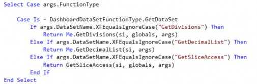
…we are passing the dataset name as the second parameter.
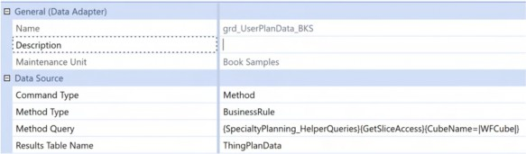
Figure 6.20
The current Workflow Cube is passed to gather the Data Cell Access security information.
Pivot Grid
That Pivot Grid uses the previous data adapter.
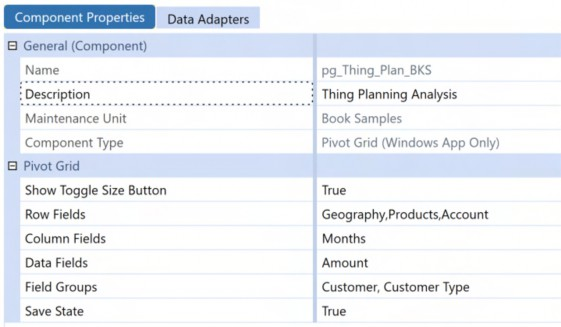
Figure 6.21
C&CCC’s Users are given a starting point where Geography, Products, and Account are added to rows. Months are added to columns, and Amount to the Data field.
Since Customer and Customer Type are used together, these two are grouped as a single column. Users can save their analysis with the Save State set to True.
Dashboard
A simple Dashboard is created for the Users to access this information by adding the Pivot Grid as a Component.
The Volume Sales Register records are as below.
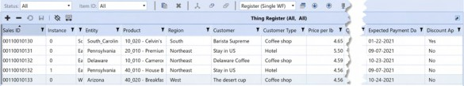
Figure 6.22
Access by Planner
Natalie, the Vice President of FP&A will see all of the Entities and Products, per her view of Total_Geography (Dimensional Access) and its descendants as well as all Products (Product_Total Category – Data Cell Access row).
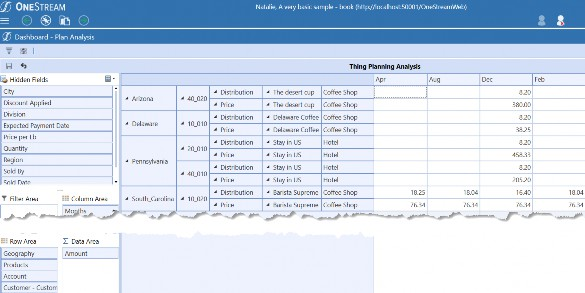
Figure 6.23
Jessica can see all Entities under West (Dimensional Access) and all Products (Product_Total Category – Data Cell Access row).
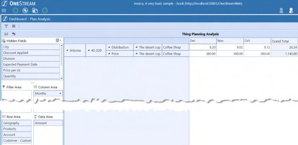
Figure 6.24
Tiffany can see all Ground Coffee Products under East Entities (Ground_Coffee_East Category – Data Cell Access row), all Decaf Products under West Entities (West_Decaf Category – Data Cell Access row), all Whole Bean Products under East Entities (Whole_Bean_East Category – Data Cell Access row).
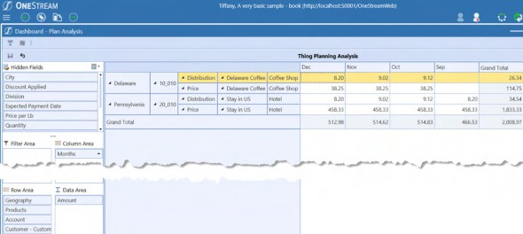
Figure 6.25
Sandra has left C&CCC’s FP&A group. Although her username still exists, she has been removed from the AVBS_South group and so cannot analyze any information.
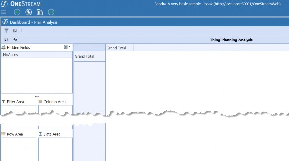
Figure 6.26
Specialty Planning Analysis › Specialty Planning Data Analysis
Table Views
C&CCC’s FP&A live in Excel. They love the way Specialty Planning works. They, like all semi-reasonable Users, want to do more, and want to do it in Excel. The business has spoken. On its face, “Can we perform Volume Sales Planning (Thing Planning) in Excel?” seems like a reasonable request. Is it?
If the data was Cube-based, multiple Cube Views embedded in an Excel workbook would fulfill the requirement of planning Volume Sales in Excel. However, since this is done in relational tables, another approach must be taken.
OneStream’s 5.2 release debuted the much anticipated/requested Table Views that can be used to analyze relational data in the Spreadsheet. The release, coincidently, made your author’s Excel add-in useless.
Using a Spreadsheet Business Rule, Planners can analyze and update data in relational sources.
Specialty Planning Analysis › Specialty Planning Data Analysis › Table Views
Thing Planning in Spreadsheet
To give Planners the ability to query, display, and update Register data in a Spreadsheet, the Spreadsheet Rule must perform the following:
Fetch the data from Thing Planning Register based on the filters (if any).
Modify the Thing Planning Register based on the User actions in the Spreadsheet. A Spreadsheet Rule supports three function Types in the following order:
Allow Users to apply filters on underlying data using bound-Type parameters. This operation is supported in
GetCustomSubstVarsInUsefunction Type.Show the filtered data (if using any parameter). This operation is supported in
GetTableView function Type.
3. If data modification is allowed in the Table View, the modification process is supported by
SaveTable View function Type.
Specialty Planning Analysis › Specialty Planning Data Analysis › Table Views › Thing Planning in Spreadsheet
How to Let the User Filter Data in Table Views
Add parameters to a Spreadsheet Rule using the GetCustomSubstVarsInUse function Type.
Select Case args.FunctionType
Case Is = SpreadsheetFunctionType.Unknown
Case Is = SpreadsheetFunctionType.GetCustomSubstVarsInUse Return Me.TLPSearchParameters(si, args.CustSubstVarsAlreadyResolved)The code above uses a function to return a list of parameters that will be used in this Spreadsheet Rule.
Private Function TLPSearchParameters(ByVal si As SessionInfo, ByVal custSubstVarsAlreadyResolved As Dictionary(Of String, String)) As List(Of String)
Try
' Prompt for status. You can use parameters here '
Dim list As New List(Of String) list.Add("StatusList_TLP")
Return list
Catch ex As Exception
Throw ErrorHandler.LogWrite(si, New XFException(si, ex)) End Try
End FunctionC&CCC’s Users filter data using regions (the Status column in Register), using the out-of-the-box
StatusList_TLP parameter.
When a parameter is added to a Spreadsheet Rule connected to a Table View, the Table View will always prompt the User after a refresh and a save.
This parameter pop-up is often not desired, and can be suppressed after a refresh using the following.
Specialty Planning Analysis › Specialty Planning Data Analysis › Table Views › Thing Planning in Spreadsheet › How to Let the User Filter Data in Table Views
Suppress Parameter Pop-up in Table Views
For background information, see the instructions in the Suppress Cube View Parameter Popup in Spreadsheet or Excel Add-in Upon Refresh section in the OneStream Design and Reference Guide.
Specialty Planning Analysis › Specialty Planning Data Analysis › Table Views › Thing Planning in Spreadsheet › How to Let the User Filter Data in Table Views
Spreadsheet Instructions
Volume Planning makes use of dropdowns in the Register. However, the lack of support for dropdowns in data columns for a Table View can be mitigated by adding an instructions sheet to the Spreadsheet.
The instruction sheet, as shown below, helps provide the required information to Users about the dropdowns in the Register and what values they need to use in the Spreadsheet (as of OneStream 6.5, Table Views do not support dropdowns in data columns).
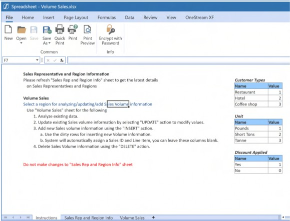
Figure 6.27
Specialty Planning Analysis › Specialty Planning Data Analysis › Table Views › Thing Planning in Spreadsheet › How to Let the User Filter Data in Table Views
Sales Representative and Region
A sheet with two Table View sections pulls Sales Representative and Sales Volume Region information.
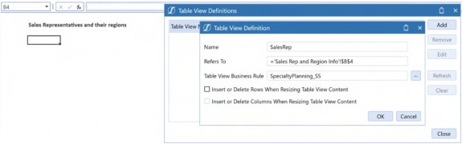
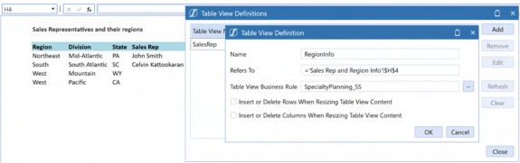
Figure 6.28
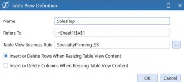
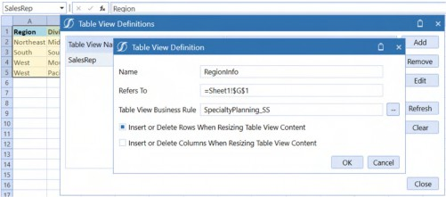
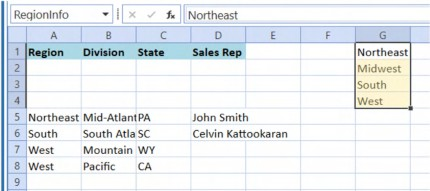
Note: If the default option of allowing the Table View to Insert or Delete Rows is checked, the following will happen. Figure 6.29 When the second Table View is added, it will push the rows of the first Table View to accommodate its rows. Figure 6.30 |
As two Table Views are on this sheet, uncheck the Insert or Delete Rows When Resizing Table View Content check box.
Sales Representatives are retrieved from a custom external table so that Users get up-to-date information on the Sales Representatives. Note that this table is completely outside of Thing Planning and is an example of the supplemental relational data that OneStream can support in a solution.
Sales Volume Region is pulled from Thing Register.
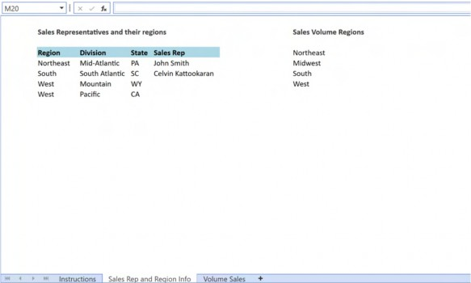
Figure 6.31
While a name can be defined for the Table Views in a rule, it is instead recommended to use a single Spreadsheet Rule/no Table View name for User analysis Table View operations. We are providing this suggestion as there is no option to list the names of the Table Views included in a Spreadsheet Rule, and it can be hard for Users to remember all the different names in a Spreadsheet Rule.
This use case has multiple Table Views in a single Spreadsheet Rule.
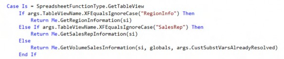
The SalesRep and RegionInfo Table Views are not being exposed for User analysis; they are there to provide the supplemental information to the Users and no more.
After adding the Table Views, OneStream automatically creates named ranges in the Spreadsheet.
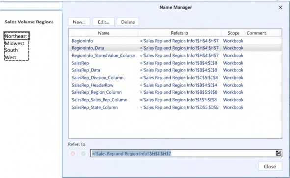
Figure 6.32
Use the RegionInfo_Data-named range to add a dropdown in the Volume Sales sheet.
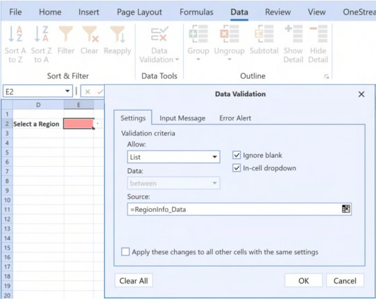
Figure 6.33
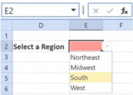
Figure 6.34
Once the list is set up, name this cell with the parameter name. In this example, cell E2 is named
StatusList_TLP.
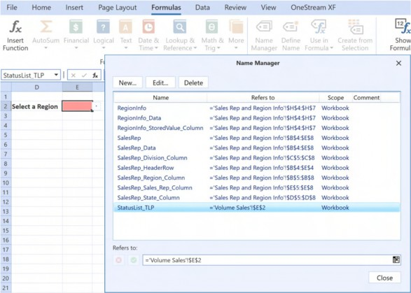
Figure 6.35
By doing this, the cell’s Named Range value feeds the parameter value from the Spreadsheet, and the pop-up remains hidden. By using a Table View to pull the Status from Register, only the valid Statuses in Thing Planning are displayed.
Specialty Planning Analysis › Specialty Planning Data Analysis › Table Views › Thing Planning in Spreadsheet
How to Get Data in a Table View
Data in Table View is shown to the User with the help of GetTableView function Type.
Case Is = SpreadsheetFunctionType.GetTableView
If args.Table ViewName.XFEqualsIgnoreCase("RegionInfo") Then Return Me.GetRegionInformation(si)
Else If args.Table ViewName.XFEqualsIgnoreCase("SalesRep") Then Return Me.GetSalesRepInformation(si)
Else
Return Me.GetVolumeSalesInformation(si, globals, args.CustSubstVarsAlreadyResolved)
End IfMultiple Table Views in a Spreadsheet Rule are possible. However, it is recommended to limit one Table View per Spreadsheet, although there is a place for more than one in administrative functions.
Specialty Planning Analysis › Specialty Planning Data Analysis › Table Views › Thing Planning in Spreadsheet › How to Get Data in a Table View
Data from External Tables
Sales Representative information is retrieved from an external table using the following function.
Dim salesRepInfoView As New TableView() salesRepInfoView.CanModifyData = False
Using dbConn As DbConnInfo = BRApi.Database.CreateExternalDbConnInfo(si, "AVBS Warehouse")
Dim sql As New Text.StringBuilder sql.AppendLine("SELECT SalesRegion as Region") sql.AppendLine(",SalesDivision as Division") sql.AppendLine(",StateCode as State")
sql.AppendLine(", c.FirstName + ' ' + c.LastName as 'Sales Rep'") sql.AppendLine("FROM DimSalesRegion a")
sql.AppendLine("LEFT OUTER JOIN DimSalesRep b ON a.SalesRegionKey=b.SalesRegionKey")
sql.AppendLine("LEFT OUTER JOIN DimEmployee c ON b.EmployeeKey=c.EmployeeKey")
Dim dt As DataTable = BRApi.Database.ExecuteSqlUsingReader(dbConn, sql.ToString, True)
salesRepInfoView.PopulateFromDataTable(dt, True, True) Dim tblHeaderFormat As New TableViewFormat() tblHeaderFormat.IsBold = True tblHeaderFormat.BackgroundColor = XFColors.LightBlue salesRepInfoView.HeaderFormat = tblHeaderFormat
End Using
Return salesRepInfoViewThe code performs the following steps:
Instantiate a new unmodifiable Table View.
Create an external database connection information (this database is already added as an external source in the OneStream Application Server configuration). Three tables from the AVBS Warehouse are joined to get the required information on Regions, Divisions, States, and their Sales Representatives.
Populate the Table View using the dt DataTable. Show the column headers (1st Boolean parameter) and use DataTypes in the Table View (2nd Boolean parameter) using salesRepInfoView.PopulateFromDataTable.
3. Format the headers to make them pretty.
Specialty Planning Analysis › Specialty Planning Data Analysis › Table Views › Thing Planning in Spreadsheet › How to Get Data in a Table View
Status from Thing Planning
Regions are shown in the Spreadsheet using the following function.
Dim regionInfoView As New TableView() regionInfoView.CanModifyData = False
Using dbConn As DbConnInfo = BRApi.Database.CreateApplicationDbConnInfo(si)
Dim sql As New Text.StringBuilder sql.AppendLine("SELECT StoredValue") sql.AppendLine("FROM XFW_TLP_ControlListItems") sql.AppendLine("WHERE FieldName='StatusValues'") sql.AppendLine("ORDER BY DisplayValue")
Dim dt As DataTable = BRApi.Database.ExecuteSqlUsingReader(dbConn, sql.ToString, True)
regionInfoView.PopulateFromDataTable(dt, False, True) End Using
Return regionInfoViewSpecialty Planning solutions store Status information in a table called XFW_TLP_ControlListItems. Statuses are stored with a FieldName value of StatusValues. The values shown in the Status List of Thing Planning are fetched using this function.
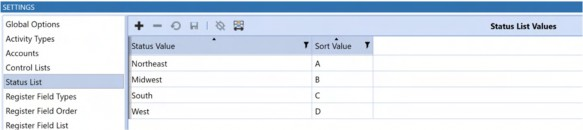
Figure 6.36
Since there is only one column, the column headers are suppressed via regionInfoView.PopulateFromDataTable.
Specialty Planning Analysis › Specialty Planning Data Analysis › Table Views › Thing Planning in Spreadsheet › How to Get Data in a Table View
Register Data in Spreadsheet
The Else condition below reflects not using a Table View Name for the Register information.
Case Is = SpreadsheetFunctionType.GetTableView
If args.Table ViewName.XFEqualsIgnoreCase("RegionInfo") Then Return Me.GetRegionInformation(si)
Else If args.Table ViewName.XFEqualsIgnoreCase("SalesRep") Then Return Me.GetSalesRepInformation(si)
Else
Return Me.GetVolumeSalesInformation(si, globals, args.CustSubstVarsAlreadyResolved)
End IfThe Planner can use this rule to perform analysis by selecting the Table View Business Rule only. (The name, in this case, is automatically filled by the selection process, it must be left as is for the rules without a Table View name.)
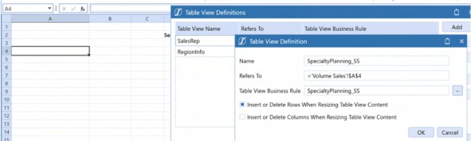
Figure 6.37
C&CCC’s Users’ desire to perform Volume Planning in Excel is satisfied by closely replicating what the Register does.
Planners can use the region filter to pull data from the Register, as shown below.
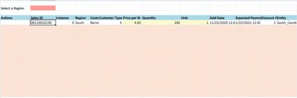
Figure 6.38
Apart from the Actions columns, it is a replica of the Thing Planning Register.
Columns Based on Region (Status) Selection
To replicate the Register in Spreadsheet, we need to get the Time and Scenario information from the Workflow. This also involves getting the columns that are active and their aliases based on the Region (Status) selected by the User.
Dim volumeSalesView As New TableView()
Dim strScenarioName As String = ScenarioDimHelper.GetNameFromID(si, si.WorkflowClusterPk.ScenarioKey)
Dim strTimeName As String = BRApi.Finance.Time.GetNameFromId(si,si.WorkflowClusterPk.TimeKey)To bring the Register information to the Spreadsheet, a Table View must be created by querying the Scenario and Time from the current Workflow.
If custSubstVarsAlreadyResolved.ContainsKey("StatusList_TLP") Dim strStatus As String = custSubstVarsAlreadyResolved("StatusList_TLP")
'Create a dictionary of Register Columns and Aliases Dim codeDict As Dictionary(Of String, String) =
Me.GetRegisterColAliases(si, strStatus)Check whether the Status substitution variable is resolved (this is done to use the Status value in the SQL WHERE clause), then create a Dictionary that will hold the alias values of the columns that are visible in the Register.
Register column values are stored using a FieldName value of RegCol suffixed with the Status. Each status can have its own set of columns enabled. E.g., the Midwest region can capture more detail than the Northeast region (like a customer address).
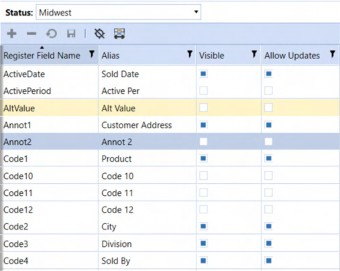
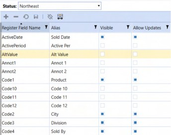
Figure 6.39
In C&CCC’s case, there are the following column and alias value combinations, ignoring the default All and Exception statuses.
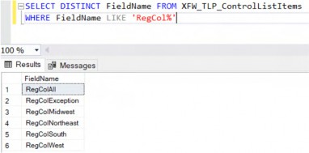
Figure 6.40 The code is pulling all valid columns for each Region.
Function for Getting Register Information
A function is created for getting the Register information as this part of the code is re-used. Use the Register’s column names (Register Field Names) as the Dictionary key.
Private Function GetRegisterColAliases(ByVal si As SessionInfo, ByVal strStatus As String) As Dictionary(Of String, String)
Try
Dim codeDict As New Dictionary(Of String, String) Using dbConn As DBConnInfo =
BRAPi.Database.CreateApplicationDbConnInfo(si)
Dim codeNameSQL As New Text.StringBuilder codeNameSQL.AppendLine("SELECT CASE WHEN a.DisplayValue='' THEN a.StoredValue ELSE a.DisplayValue END as DisplayValue")
codeNameSQL.AppendLine(",a.StoredValue") codeNameSQL.AppendLine(", CAST(colOrder.StoredValue as int) as SortOrder")
codeNameSQL.AppendLine("FROM XFW_TLP_ControlListItems a WITH (NOLOCK)")The code performs the following steps:
Create a new Dictionary to hold the column names and their aliases.
Create database connection information to get the Register column information.
Instantiate a new StringBuilder to capture the required SQL.
As discussed earlier, the Control List table (
XFW_TLP_ControlListItems) holds a handful of information. In this case, we use the columns shown on Register using the Region (Status) selected by the User.StoredValueis the column that holds the column name;DisplayValueholds the alias value. If an alias is not supplied, useStoredValueas the alias.
Column Order from Register
Since this Table View is getting created as a replica of the Register, the code also needs to get the columns in the order they are shown in the Register.
Register column order is stored in the Control List table with a FieldName of
RegisterFieldOrder.
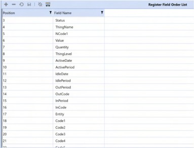
Figure 6.41
This is how the table stores the Register Field Order.
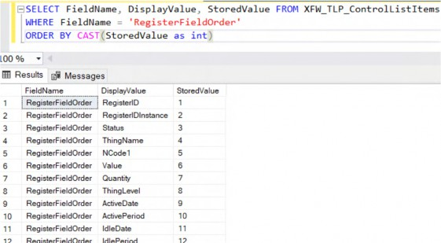
Figure 6.42
codeNameSQL.AppendLine("LEFT JOIN XFW_TLP_ControlListItems colOrder WITH (NOLOCK) on colOrder.DisplayValue=a.StoredValue")
codeNameSQL.AppendLine("WHERE a.FieldName='RegCol" & strStatus & "'")
codeNameSQL.AppendLine("AND (a.Active=1)") codeNameSQL.AppendLine("AND colOrder.FieldName='RegisterFieldOrder'") codeNameSQL.AppendLine("ORDER BY SortOrder")
Dim codeDT As DataTable = BRApi.Database.ExecuteSql(dbConn, codeNameSQL.ToString, False)
For Each codeNameDr As DataRow In codeDT.Rows codeDict.Add(codeNameDr("StoredValue"),codeNameDr("DisplayValue"))
Next End Using
Return codeDictThe code performs the following steps:
A
SELF JOINonDisplayValueandStoredValueto get column order.Filter the columns based on the Region information (Status).
Show only columns that are visible for each Region.
Order the columns by the column order.
Once the information is populated in the DataTable, populate the Dictionary with the column names as key, and alias as value, and return it to the calling Component.
Perform Register Actions in Spreadsheet
Users can perform the following actions in a Register.
Add new volume information
Update existing information
Delete volume information
For the Spreadsheet Rule to mimic these actions, and to capture the type of action, we are going to make use of the Spreadsheet Status column (not to be confused with the Register status).
Using dbConn As DBConnInfo = BRAPi.Database.CreateApplicationDbConnInfo(si)
' Allow table view to update data volumeSalesView.CanModifyData = True it.
' Add status columns to table view so that users can interact with volumeSalesView.EnableStatusColumn(True, "Actions", 3,
"INSERT,UPDATE,DELETE")A database connection is created for fetching the Register data.
Users can modify the Table View, so set the CanModifyData property of the Table View to True.
Planners must pick an action as there are no buttons on the Spreadsheet (unlike the Register) to find out whether a User wants to DELETE, INSERT, or UPDATE on each row they are changing.
Once enabled (1st parameter), a status column allows adding multiple values as a dropdown list (4th parameter). Set a name for the status column (2nd parameter) and mention where the column will show up in Spreadsheet (3rd parameter, this follows zero-based indexing).
Allowing Row Inserts in Table View
If a Table View is set to allow modifications, you can add empty rows to the Table View (An Excel menu action of Insert > Rows will not work in Table Views) by allowing a certain set of empty rows to be added along with the existing data.
Users want to add new Volume sales information; they are allowed to add up to 15 rows at a time. To distinguish between the existing rows and new rows, a different background color (a custom color is used in this example) is applied to the empty rows.
' Add empty columns for inserting data volumeSalesView.NumberOfEmptyRowsToAdd = 15 volumeSalesView.EmptyRowsBackgroundColor = XFColors.GetOrCreateColor("#FFFCE4D6")
Getting the Data and Adding it in Table View
We are going to make use of the Register columns (stored as Keys in the Dictionary) and their aliases (stored as Values in the Dictionary) to generate the SQL.
Dim sql As New Text.StringBuilder
sql.AppendLine("SELECT WFProfileName as ProfileName, WFScenarioName as ScenarioName, WFTimeName as TimeName,")
sql.AppendLine(String.Join("," ,codeDict.Select(Function(x) x.Key & " as '" & x.Value & "'").toList()))
sql.AppendLine("FROM XFW_TLP_Register") sql.AppendLine("WHERE Status ='" & strStatus & "'") sql.AppendLine("AND WFTimeName='" & strTimeName & "'")
sql.AppendLine("AND WFScenarioName='" & strScenarioName & "'")
Dim dt As DataTable = BRApi.Database.ExecuteSqlUsingReader(dbConn, sql.ToString, True)
volumeSalesView.PopulateFromDataTable(dt, True, True) End UsingA StringBuilder is created to generate the required SQL.
Workflow ProfileName, ScenarioName, and TimeName are pulled (these columns will be hidden in the Spreadsheet, which is why the Actions column in the previous section Perform Register Actions in Spreadsheet was as the 4th column).
Generate the SQL statement using the Dictionary’s keys and values to alias the columns. The Dictionary stores values as a Key Value Pair: RegisterID:Sales ID.
Use a String.Join operation to join the list of values as a comma-separated string. This command will generate a string like the one below.
RegisterID as ‘Sales ID’, Code1 as ‘Product’, IdleDate as ‘Expected Payment Date’
| Note: ProfileName can be used in the WHERE clause, if you are limiting the User’s selection based on Workflows and Statuses. |
Generate a DataTable using the SQL statement and populate the Table View using the DataTable.
PopulateFromDataTable is a Method that was introduced in version 6.4.
Formatting Table View Columns
OneStream 6.4 added options for formatting Table View columns. We can make use of them so that particular columns can stand out for the User.
All column headers are given a light blue color using a TableViewColumnFormat.
Dim tblHeaderFormat As New TableViewFormat() tblHeaderFormat.IsBold = True tblHeaderFormat.BackgroundColor = XFColors.LightBlue volumeSalesView.HeaderFormat = tblHeaderFormat
C&CCC’s Users would like to show Price with two-digit precision. To achieve this, add a column format similar to the header format. The price column is also given a background color to indicate that it can be updated.
' format price per lb to two decimals
Dim priceColFormat As New TableViewColumnFormat() priceColFormat.NumDecimals = 2
priceColFormat.BackgroundColor = XFColors.LightGoldenrodYellow volumeSalesView.Columns(8).ColumnFormat = priceColFormatSimilar highlighting is added to the Quantity and Unit columns. Keep in mind that you need to refer to columns by their respective column number (9 is Column K, and 10 is Column L).
' change quantity, and unit color
Dim updateColFormat As New TableViewColumnFormat updateColFormat.BackgroundColor = XFColors.LightGoldenrodYellow volumeSalesView.Columns(9).ColumnFormat = updateColFormat volumeSalesView.Columns(10).ColumnFormat = updateColFormatHiding Table View Columns
Profile, Time, and Scenario names are needed for updating and deleting records from the Register. However, C&CCC’s Users want this to appear and function as closely to a Register as possible, hence these are hidden in the Table View.
To hide columns in a Spreadsheet, use a column width (your author has found to his chagrin that a column width of zero does not work), which equals a small decimal number. The first three columns are hidden using the code below.
' hide profile, scenario, time id columns
Dim hideColFormat As New TableViewColumnFormat hideColFormat.ColumnWidth = .01
volumeSalesView.Columns(0).ColumnFormat = hideColFormat volumeSalesView.Columns(1).ColumnFormat = hideColFormat volumeSalesView.Columns(2).ColumnFormat = hideColFormatAfter selecting Northeast from the region selection (currently showing South region), when the Planner performs a “Refresh Sheet” operation, the latest data is retrieved.
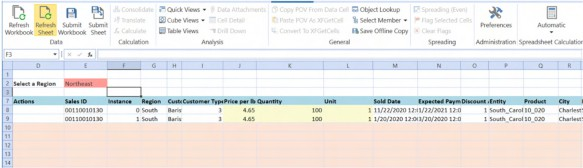
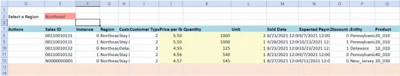
Figure 6.43
Specialty Planning Analysis › Specialty Planning Data Analysis › Table Views › Thing Planning in Spreadsheet
How to Update Data from a Table View
Saving a Table View can only work if you are allowing modifications to the Table View. The SaveTable View function Type allows Planners to modify the Register contents if CanModifyData is set to True for the Table View in question.
Here is a function to change the Register.
Case Is = SpreadsheetFunctionType.SaveTable View Return ChangeTLPRegister(si, globals, args.CustSubstVarsAlreadyResolved, args.Table View)
Pass BRGlobals, CustomSubVars and the Table View from the Spreadsheet to the function.
Specialty Planning Analysis › Specialty Planning Data Analysis › Table Views › Thing Planning in Spreadsheet › How to Update Data from a Table View
Get Register Column Information
The function employed for fetching data is used for updating as well. (The Spreadsheet Rule does not currently support BRGlobals and hence the Dictionary cannot be saved as a global object and a repeated call is required to gather the Register column names and aliases information again.) Use a Boolean to flag whether the save worked or not. Generate the code Dictionary (Register data in Spreadsheet) to get the aliases and column names as a Dictionary.
Dim didSaveWork As Boolean = True
If custSubstVarsAlreadyResolved.ContainsKey("StatusList_TLP") Dim strStatus As String = custSubstVarsAlreadyResolved("StatusList_TLP")
Dim codeDict As Dictionary(Of String, String) = Me.GetRegisterColAliases(si, strStatus)Specialty Planning Analysis › Specialty Planning Data Analysis › Table Views › Thing Planning in Spreadsheet › How to Update Data from a Table View
Take Action Only on Changed Rows
Similar to the Register, you can find out which rows are changed by the User, by using the
IsDirty Method on the Table View Row. Table View is more intelligent than you think it is.
We are going to loop through all the changed rows and perform the respective action selected by the User.
If Not tblView Is Nothing
Dim updateStmt As New Text.StringBuilder Dim deleteStmt As New Text.StringBuilder Using dbConn As DbConnInfo =
BRApi.Database.CreateApplicationDbConnInfo(si) Dim insertDT As DataTable =
BRApi.Database.ExecuteSqlUsingReader(dbConn, "SELECT Top (1) * FROM XFW_TLP_Register", True).Clone
For Each tblViewRow As Table ViewRow In tblView.Rows.Where(Function (x) x.Item("Actions").IsDirty And x.IsHeader = False)
If tblViewRow.Item("Actions").Value.XFEqualsIgnoreCase("INSERT")
Me.InsertVolumeSales(si, codeDict, tblView, tblViewRow, insertDT)
Else If
tblViewRow.Item("Actions").Value.XFEqualsIgnoreCase("UPDATE") Me.UpdateVolumeSales(si, codeDict, tblViewRow, updateStmt)
Else If tblViewRow.Item("Actions").Value.XFEqualsIgnoreCase("DELETE")
Me.DeleteVolumeSales(si, codeDict, tblViewRow, deleteStmt)
End If NextThis code snippet performs the following steps:
Check whether the Table View that got passed is a blank Table View.
Two StringBuilders are created to capture the SQL statements for updating and deleting the records.
Database connection information is created to capture the structure of the Register table that is used to add new rows (new volume information recorded by Users in the Table View).
Loop through the rows in the Spreadsheet and check whether the Actions column is dirty (this check ensures that only edited rows are considered) and the changed row is not a header row).
Perform the corresponding action.
For each action (INSERT, UPDATE, DELETE), a specific function is used to perform the activities related to that function.
Update Register Data from Table View
Updating the changes back to the Register is performed by creating a SQL statement using the earlier-generated Register Column Alias Dictionary, and the Updated Table View Row.
The Register Column Alias Dictionary is required to reverse-engineer the Table View column name (Register Aliases) to the real Register Column names (Register Fields).
Pass the Register Column Alias Dictionary, the edited Table View row, and the StringBuilder to the UPDATE function.
Dim colNameValues As New Dictionary(Of String, Object) For Each colName In codeDict.Values
…… NextCreate a Dictionary to capture the column name and the changed value.
To generate the SQL Update statement, we need the name of the Register Column and the Value. We are looping through the columns of the changed Table View Row.
colNameValues.Add(codeDict.FirstOrDefault(Function(x) x.Value.Equals(colName)).Key, tblViewRow.Item(colName).Value)
The code above is using a Method to find the key of a Dictionary using its value (Alias – Table View column name, Register Field – Key). Once we get the Register Column name, we add the column name and the value to the Dictionary.
For example, the Register Column Alias Dictionary has three Key Value Pairs: RegisterID:Sales ID, Code1:Product, Code2:City. We are looping through the Table View column names (Sales ID, Product, City) to find their respective key in the Dictionary.
Note: if you want the process to be more efficient, make an additional check to determine if the User changed the value of the column by comparing tblViewRow.Item(colName).OriginalValue.Equals(tblViewRow.Item(colNa me).Value). To perform this additional check on different column data Types (Decimal, Integer, Date), you will need a conversion from the literal String. The original value will produce a string with precision; hence a string comparison of 125.000000000 to 125.0 will fail. |
An UPDATE statement is generated for all the updated rows. The execution of this statement is only done once to maintain better performance.
If colNameValues.Count > 0 Then updateSTMT.AppendLine("UPDATE XFW_TLP_Register") updateSTMT.AppendLine("SET ") updateSTMT.AppendLine(String.Join(", ", colNameValues.Select(Function(x) x.Key & "='" & x.Value & "'").toList()))
updateSTMT.AppendLine("WHERE RegisterID ='" & tblViewRow.Item(codeDict("RegisterID")).Value & "'")
updateSTMT.AppendLine("AND RegisterIDInstance='" & tblViewRow.Item(codeDict("RegisterIDInstance")).Value & "'")
updateSTMT.AppendLine("AND WFProfileName='" & tblViewRow.Item("ProfileName").Value & "'")
updateSTMT.AppendLine("AND WFTimeName='" & tblViewRow.Item("TimeName").Value & "'")
updateSTMT.AppendLine("AND WFScenarioName='" & tblViewRow.Item("ScenarioName").Value & "'")
End IfThis code snippet performs the following steps:
Check whether a column update is needed.
Generate the
UPDATE SQLstatement using the captured values.Use a LINQ function to get the keys and values from the
colNameValuesDictionary to get a list and then join them using a comma to generate a comma-separated string. As an example, ifcolNameValueshas values likeQuantity:125, Price:4.35, then the above operation generates the following String:Quantity=’125’, Price=’4.35’
Delete Register Data from Table View
Deleting rows is done by generating a DELETE statement using the RegisterID, Instance, Profile, Time, and Scenario information from the Table View.
Pass the Register Column Alias Dictionary, the edited Table View row, and the StringBuilder to the DELETE function.
deleteStmt.AppendLine("DELETE FROM XFW_TLP_Register") deleteStmt.AppendLine("WHERE RegisterID ='" & tblViewRow.Item(codeDict("RegisterID")).Value & "'") deleteStmt.AppendLine("AND RegisterIDInstance='" & tblViewRow.Item(codeDict("RegisterIDInstance")).Value & "'") deleteStmt.AppendLine("AND WFProfileName='" & tblViewRow.Item("ProfileName").Value & "'") deleteStmt.AppendLine("AND WFTimeName='" & tblViewRow.Item("TimeName").Value & "'") deleteStmt.AppendLine("AND WFScenarioName='" & tblViewRow.Item("ScenarioName").Value & "'")
The code gets the RegisterID and RegisterIDInstance values from Table View and generates a DELETE SQL statement for each DELETE row.
This statement is then executed once in the main code.
Add New Records with Auto-generated RegisterIDs from Table View
There are two types of people in this world: those who love RegisterID and those who do not. Gentle Reader, you know where C&CCC’s Users stand by this section’s title. �
This step also needs to adhere to the security that is setup on the Register using Workflow Entities; as we saw in the previous chapter, Planning without limits, Register security is driven through the Profile Entities. While adding new Volume information, we now need to find out the correct profile name using the Entity added by the User.
We also need to generate all the default values for the columns that are not present in the Table View as many of these columns are not NULLABLE while performing an INSERT operation.
Instead of generating multiple INSERT statements, and performing them one after the other, we are going to generate a DataTable with all the required information and use a BULK upload approach.
Since we are taking a BULK upload approach, we need to grab all the columns in the Register and understand their data Types (for creating the default values).
Pass the Register Column Alias Dictionary, the Table View, the edited Table View row, and the
DataTable (which has the Register Column information) to the INSERT function.
Getting the Scenario, and Time names from the current Workflow. This will be used to add the row to the Register table.
Dim strScenarioName As String = ScenarioDimHelper.GetNameFromID(si, si.WorkflowClusterPk.ScenarioKey)
Dim strTimeName As String = BRApi.Finance.Time.GetNameFromId(si,si.WorkflowClusterPk.TimeKey)Get Workflow Name from the User-entered Entity
Since Users can type in the Entity Member name to the Spreadsheet (versus a dropdown based on the Profile Entities in the Register), we need to find the matching profile to send the newly created Volume information.
The code to get the profile from the Entity works as follows.
Using an ancestor (the ancestor of Volume Planning Workflows is C&C Plan) Workflow, loop through all the descendants of Type Import and get the assigned Entity information if they are used for Volume Planning.
C&CCC’s Volume Planning information is under the Main review Workflow called C&C Plan, as shown below.
Figure 6.44
' Get all workflows under C&C Plan review groups
' All Volume Planning workflows are assumed to be under this parent Dim wfClusterPk As WorkflowUnitClusterPk = BRApi.Workflow.General.GetWorkflowUnitClusterPk(si, "C&C Plan", strScenarioName, strTimeName)
Dim objList As List(Of WorkFlowProfileInfo) = BRApi.Workflow.Metadata.GetRelatives(si, wfClusterPk, WorkflowProfileRelativeTypes.Descendants, WorkflowProfileTypes.InputImportChild)
Dim wfEntityLookup As New Dictionary(Of String, String) For Each wfChild As WorkflowProfileInfo In objList
Dim strWFName As String() = wfChild.Name.Split(".")
If strWFName(1).Equals("Volume Planning") Then 'Get the entity assignment for this wf
Dim wfEntList As List(Of WorkflowProfileEntityInfo) = BRApi.Workflow.Metadata.GetProfileEntities(si, wfChild.ProfileKey)
If wfEntList.Count > 0 Then
For Each entityAssignentValue As WorkflowProfileEntityInfo In wfEntList wfEntityLookup.Add(entityAssignentValue.EntityName, wfChild.Name)
Next End If
End If NextThis code section performs the following steps:
Get the Workflow Unit cluster using C&C Plan, Scenario, and Time information.
Query the descendants of that Workflow, which are of the Type Import (Volume Planning is of Import Type).
Create a Dictionary to hold the Entity and Workflow information.
Loop the Workflow Profile information to check if the Workflow Profile is Volume Planning by splitting the Workflow name by
"."For all the Volume Planning Workflows, get the profile Entities and add the Entity Name and the profile name to the Dictionary.
Generate a RegisterID
Generating a RegisterID can be handled in many ways. You can generate a sequential ID for every single row, or you can generate one using a combination of columns. In C&CCC’s case, we want to generate a new ID for any new combination of Entity, Product, and City.
Use a combination of Entity-Product-City to auto-generate a Sales ID. If this is an existing combination, get the Sales ID (RegisterID) and add it as a new Instance (RegisterIDInstance).
This code section performs the following steps:
Create a database connection information to get the required information from the Register table.
Capture the Users’ Entity, Product, and City information.
Get the correct profile for this new row.
Using dbConn As DbConnInfo = BRApi.Database.CreateApplicationDbConnInfo(si)
Dim strEntityName As String = tblViewRow.Item(codeDict("Entity")).Value
Dim strProductName As String = tblViewRow.Item(codeDict("Code1")).Value
Dim strCityName As String = tblViewRow.Item(codeDict("Code2")).Value
Dim strProfileName As String = wfEntityLookup(strEntityName)This code section performs the following steps:
1. Create a StringBuilder to generate the SQL to find out the existing RegisterID and the
Max RegisterIDInstance for Entity-Product-City combination.
2. Populate a DataTable with the information from the Register.
Dim salesIDInfo As New Text.StringBuilder salesIDInfo.AppendLine("SELECT RegisterID, MAX(RegisterIDInstance)
as RegisterIDInstance") salesIDInfo.AppendLine("FROM XFW_TLP_Register")
salesIDInfo.AppendLine("WHERE WFProfileName='" & strProfileName & "'")
salesIDInfo.AppendLine("AND WFTimeName='" & strTimeName & "'") salesIDInfo.AppendLine("AND WFScenarioName='" & strScenarioName &
"'")
salesIDInfo.AppendLine("AND Entity='" & strEntityName & "' AND Code1='" & strProductName & "' AND Code2='" & strCityName & "'")
salesIDInfo.AppendLine("GROUP BY RegisterID") Dim salesIDAndInstance As DataTable =
BRApi.Database.ExecuteSqlUsingReader(dbConn, salesIDInfo.ToString, True)If this is a new combination, the above generated DataTable will be empty. If this is an existing combination, we’ll get the RegisterID and the last instance of this ID.
Padding in VB.Net
A literal parameter is used to keep track of the Sales ID sequence.
Figure 6.45
C&CCC’s Sales IDs follow an 11-digit pattern; this parameter value is left padded to fill to the 11 digits.
Dim strSalesID As String = String.Empty Dim intLastSalesID As Integer =
ConvertHelper.ToInt32(BRApi.Dashboards.Parameters.GetLiteralParameterV alue(si, False, "paramLastSalesID"))
Dim intLineItemNum As Integer = 0
If salesIDAndInstance.Rows.Count > 0 Then strSalesID = salesIDAndInstance.Rows(0)("RegisterID") intLineItemNum = salesIDAndInstance.Rows(0)("RegisterIDInstance") +1
Else
Dim intNewSalesID as Integer = (intLastSalesID + 1) strSalesID = "N" & intNewSalesID.ToString.PadLeft(10, "0") intLineItemNum = 0
BRApi.Dashboards.Parameters.SetLiteralParameterValue(si, False, "paramLastSalesID", intNewSalesID)
End IfThis code section performs the following steps:
Create a String and an integer to hold the
SalesIDandLineIteminformation.Get the last known new
SalesIDnumber from the parameter.If the DataTable has a value, this means the “Entity-Product-City” combination exists. Get that
RegisterIDinformation and then increment theRegisterIDInstanceby one to create the new record.If the combination is not present, increment the last known number, and generate an 11-digit code.
Update the parameter with the new
SalesID.
Creating the DataTable from Table View Row
Since the BULK Upload Method is used, we need to add rows to the empty DataTable with values from the Table View.
Calculated values, and the values that are present in the Table View, are added to the DataTable.
Dim regDR As datarow = insertDT.NewRow
Dim soldDate As Date = tblViewRow.Item(codeDict("ActiveDate")).Value Dim decCustomerType As Decimal = tblViewRow.Item(codeDict("NCode1")).ValueC&CCC calculates Expected Payment Date using the Sold Date and Customer Type. Capture those data values from the Table View.
For the columns that are present in the Table View, we are either going to read them from the Table View row or calculate them.
For Each regDC As DataColumn In insertDT.Columns
If codeDict.ContainsKey(regDC.ColumnName) ' these are the columns that are present in the Table View
' calculated columns
If regDC.ColumnName.XFEqualsIgnoreCase("RegisterID") Then regDR("RegisterID") = strSalesID
Else If regDC.ColumnName.XFEqualsIgnoreCase("RegisterIDInstance") Then regDR("RegisterIDInstance") = intLineItemNum
Else If regDC.ColumnName.XFEqualsIgnoreCase("IdleDate") Then If decCustomerType = 3 Then 'coffee shop regDR("IdleDate") = soldDate.AddMonths(2)
ElseIf decCustomerType = 2 Then ' hotel regDR("IdleDate") = soldDate.AddDays(15)
ElseIf decCustomerType = 1 Then ' restaurant regDR("IdleDate") = soldDate.AddMonths(1)
End IfThe code performs the following operations:
1. Loop through the columns present in the DataTable (all the columns in
XFW_TLP_Register).
2. Check if the column is present in the Table View; check whether these are calculated. If they are calculated, then calculate the value and assign it.
Register Columns Present in Table View
If the Register columns are present in the Table View, we need to make sure that they have a value in the Table View. (NULL values cannot be inserted to the Register.)
Else ' These columns are the ones that are coming from spreadsheet
If String.IsNullOrEmpty(tblViewRow.Item(codeDict(regDC.ColumnName)).Value)
If regDC.DataType.Equals(GetType(Int32)) Then regDR(regDC.ColumnName) = 0
Else If regDC.DataType.Equals(GetType(Decimal)) Then regDR(regDC.ColumnName) = 0
Else If regDC.DataType.Equals(GetType(DateTime)) Then regDR(regDC.ColumnName) =
Convert.ToDateTime("1/1/2000")
Else If regDC.DataType.Equals(GetType(String)) Then regDR(regDC.ColumnName) = String.Empty
End If Else
regDR(regDC.ColumnName) = tblViewRow.Item(codeDict(regDC.ColumnName)).Value
End If End IfThe code performs the following:
If the column is not a calculated column, and is present in the Table View, check whether the value from the Spreadsheet is an empty string.
If this is an empty string, check the data Type of the current column and assign a default value based on the data Type. Assign variable Type initial values as appropriate, e.g., the date field gets a default value of 1/1/2000, the string field gets a blank value, and so forth.
If the value from the Table View is not empty, assign that value to the current cell.
Register Columns Not Present in Table View
Columns that are not present in Table View get the default value.
Since WFProfileName, WFTimeName, and WFScenarioName columns are not added with the same name in the Table View (they are called as ProfileName, TimeName, ScenarioName in Table View), they are treated as if they are not present.
Else ' these are the columns that are not present in the table view If regDC.ColumnName.XFEqualsIgnoreCase("WFProfileName") Then regDR("WFProfileName") = strProfileName
Else If regDC.ColumnName.XFEqualsIgnoreCase("WFScenarioName")
Then
regDR("WFScenarioName") = strScenarioName
Else If regDC.ColumnName.XFEqualsIgnoreCase("WFTimeName") Then regDR("WFTimeName") = strTimeName
Else
If regDC.DataType.Equals(GetType(Int32)) Then regDR(regDC.ColumnName) = 0
Else If regDC.DataType.Equals(GetType(Decimal)) Then regDR(regDC.ColumnName) = 0
Else If regDC.DataType.Equals(GetType(DateTime)) Then regDR(regDC.ColumnName) = Convert.ToDateTime("1/1/2000")
Else If regDC.DataType.Equals(GetType(String)) Then regDR(regDC.ColumnName) = String.Empty
End If End If
End If Next
insertDT.Rows.Add(regDR)The code performs the following:
Assign the Profile Name using the Entity value.
Assign Scenario and Time from the current Workflow.
For the columns that are not present in the Table View, they get the default values based on their data Types.
After the end of the column loop, add the new row to the DataTable. This DataTable is saved once for better efficiency in the main code.
Performing the Actions
All the operations that were performed on the Table View are updated/deleted/inserted all at once for better efficiency.
If updateStmt.Length > 0 Then BRApi.Database.ExecuteActionQuery(dbConn, updateStmt.ToString, True, True) End If
If deleteStmt.Length > 0 Then BRApi.Database.ExecuteActionQuery(dbConn, deleteStmt.ToString, True, True) End If
If insertDT.Rows.Count > 0 Then
BRApi.Database.SaveCustomDataTable(si, "App", "XFW_TLP_Register", insertDT, True)
End If End Using
End If
didSaveWork = True Return didSaveWork
UPDATE and DELETE functions populate the SQL statements for the specific actions. Check whether the StringBuilder is empty or not by looking at its length. If there are SQL statements, we are executing them against the Register.The INSERT function populates a DataTable with the new records. Check whether there are any new records by looking at the Row count. If there are new rows, save the DataTable to the Register.
C&CCC’s Users are all (hopefully, given the not inconsiderable effort to make them so) happy with the new solution where they can use something near as damnit to Excel for performing their Volume Sales Planning.
Specialty Planning Analysis
Supplemental Data Analysis Without Wreaking Havoc on Stage
When a company’s supplemental data is in flux (imagine frequently changing Sales Representatives), it requires a data re-load to bring in the frequently changing supplemental data. In cases like these, it is recommended not to use Stage attributes for supplemental data analysis.
The same situation can arise when trying to analyze transactional details like invoice numbers, invoice dates, etc., by performing a drill back to Stage. In this case, the first instinct is to load those records into Stage, and by doing so, make Stage act like a data warehouse where millions of records are loaded just for analysis purposes (this is the approach explored in the chapter Planning Without Limits).
When this data is loaded to the Cube, those millions of records are summarized to hundreds of thousands or less since transactional details like invoice numbers and invoice dates have no place in the Cube. The loading process and summarization of the records to Cube level in Stage can be time-consuming, almost certainly so when large datasets are considered.
Specialty Planning Analysis › Supplemental Data Analysis Without Wreaking Havoc on Stage
Why Not Stage and Stage Attributes?
The supplemental data load to Stage approach discussed in the previous chapter assumes a simple and clean dataset.
In both scenarios described above, a more sophisticated approach that operates outside OneStream is required. On-Cube supplemental data is not loaded to Stage. Those extra data elements are retained at the source and summarized outside OneStream before loading to a Cube.
NB – This design presupposes a relational data source; file-based data would need to be imported into a custom table.
Figure 6.46
Once summarized, the data is loaded to OneStream. As shown in the example below, South Carolina’s City and Sales Rep fields are dropped as part of the summarization process.
If OneStream no longer stores City and Sales Rep, how can it report on those elements of data?
The answer is Connector Rules. These rules allow the creation of custom multi-level drill backs for analysis. In the example above, one drill can provide Sales Rep and City information. A separate one could show the same Sales Rep and City fields as well as Sales Order Number and Sales Line Item details.
Specialty Planning Analysis › Supplemental Data Analysis Without Wreaking Havoc on Stage
Connector Rules
Connector Rules are Business Rules that can reach a source and pull data from it. Drill backs to the external system using a Connector Rule can also be performed through them.
This section’s use case examines the details of when a Connector Rule is used in a data source, during the load, and a drill back process.
Note: The example given below uses an external database, and so, instead of a connection string, the external database name (found in the Application configuration) is used along with the isNamedConnection Boolean set to True. |
Specialty Planning Analysis › Supplemental Data Analysis Without Wreaking Havoc on Stage › Connector Rules
How Does It Work?
Connector Rules used in conjunction with data sources are an alternative way to load data into OneStream.
A Connector Rule uses action Types to support the following functionality.
GetFieldList– returns the available columns in a rule for data source mapping.GetData– queries the source (flat file, tables, REST API, anything that can be queried) and returns the data for the data source to load.GetDrillBackTypes– returns all the different Types of drill backs defined in the rule to the User. (You can define multiple drills.)GetDrillBack– returns the drill back data using the drill Type defined in the rule.
Specialty Planning Analysis › Supplemental Data Analysis Without Wreaking Havoc on Stage › Connector Rules › How Does It Work?
Fields in a Data Source
Creating a data source and assigning a Connector Rule shows all of the fields that the Connector Rule supports.
Figure 6.47
An Action Type populates this list in the Connector Rule, and it is called GetFieldList.
Case Is = ConnectorActionTypes.GetFieldList
'Get the list of field names in the source table by selecting one row
Dim strSQL As String = "SELECT Top 1 " & Me.GetSQLColumns(si, globals, api, args)
Return api.Parser.GetFieldNameListForSQLQuery(si, DbProviderType.SqlServer, "AVBS Warehouse", True, strSQL, False)
GetFieldList needs a list of strings to return the names of columns in the Connector Rule.
Private Function GetSQLColumns(ByVal si As SessionInfo, ByVal globals As BRGlobals, ByVal api As Transformer, ByVal args As ConnectorArgs) As String
Try
'Get the SQL string for the valid fields in the fact table Dim sql As New Text.StringBuilder sql.Appendline("a.ProductKey, c.StateAlternateName, b.AccountDescription, Sum(Amount) As Data") sql.Appendline("FROM FactProductSales a")
sql.Appendline("LEFT OUTER JOIN DimAccount b On a.AccountKey = b.AccountKey")
sql.Appendline("LEFT OUTER JOIN DimGeography c ON a.GeographyKey=c.GeographyKey")
sql.Appendline("GROUP BY a.ProductKey, c.StateAlternateName, b.AccountDescription")
Return sql.ToString
Catch ex As Exception
Throw ErrorHandler.LogWrite(si, New XFException(si, ex)) End Try
End FunctionThis approach uses the GetFileNameListForSQLQuery Method to create the list of columns. This code section performs the following steps:
As the data is summarized and loaded to OneStream, select a single row from the Datawarehouse Fact table.
Join the other Dimension tables (
DimAccount, andDimGeography) to get more Dimension details.Data summarization (
SUM(Amount)) is done by grouping Product, State, and Account information.Return the generated SQL for the parser to generate a list of columns.
Specialty Planning Analysis › Supplemental Data Analysis Without Wreaking Havoc on Stage › Connector Rules › How Does It Work?
Load Process
Case Is = ConnectorActionTypes.GetData
Dim strSQL As String = "SELECT " & Me.GetSQLColumns(si, globals, api, args)
api.Parser.ProcessSQLQuery(si, DbProviderType.SqlServer, "AVBS Warehouse", True, strSQL, False, api.ProcessInfo)The same function is used to generate the column lists to generate the SQL data; all rows are selected.
ProcessSQLQuery is used to process and get the data from the source. If this was a flat-file load, you could use ProcessTextFile.
Specialty Planning Analysis › Supplemental Data Analysis Without Wreaking Havoc on Stage › Connector Rules › How Does It Work?
Drill Back Options
When a Planner navigates to the source data from a drilldown, and clicks on Drill Back,
GetDrillBackTypes is responsible for presenting the possible drill back Types.
Figure 6.48
Figure 6.49 The drill back options could be based on a User or group.
Case Is = ConnectorActionTypes.GetDrillBackTypes
'Return the list of Drill Types (Options) to present to the end user
Return Me.GetDrillBackTypeList(si, globals, api, args)This function presents the drill back Types.
Private Function GetDrillBackTypeList(ByVal si As SessionInfo, ByVal globals As BRGlobals, ByVal api As Transformer, ByVal args As ConnectorArgs) As List(Of DrillBackTypeInfo)
Try
'Create the SQL Statement
Dim drillTypes As New List(Of DrillBackTypeInfo)
If args.DrillCode.XFEqualsIgnoreCase(StageConstants.TransformationGeneral
.DrillCodeDefaultValue) Then
drillTypes.Add(New DrillBackTypeInfo(ConnectorDrillBackDisplayTypes.DataGrid, New NameAndDesc("City And Sales Rep Details","City and Sales Rep Detail")))
drillTypes.Add(New DrillBackTypeInfo(ConnectorDrillBackDisplayTypes.DataGrid, New NameAndDesc("Sales Ledger Detail","Sales Ledger Detail")))
Else If args.DrillCode.XFEqualsIgnoreCase("City And Sales Rep Details") Then drillTypes.Add(New DrillBackTypeInfo(ConnectorDrillBackDisplayTypes.DataGrid, New NameAndDesc("Sales Ledger Detail","Sales Ledger Detail")))
End If
Return drillTypes Catch ex As Exception
Throw ErrorHandler.LogWrite(si, New XFException(si, ex)) End Try
End FunctionCreating a New Drill Back Type
C&CCC’s Users would like to see the Sales Representative information and the Sales Ledger details as two separate Reports when they perform the drill back.
They would also like to reach the Ledger details from the Sales Representative Report, too.
Your author likes to call the last drill Type a multi-hop drill as you are now performing a drill back from a drill back (drill within a drill, I sound like a movie director now �).
Sales Representative details and Sales Ledger details will get a default drill code. These are the Reports that are going to show when the User performs the first drill back click.
Figure 6.50
The above private function adds two DataGrid based drill back Types for the User. DrillBackTypeInfo’s name is shown to the User, which is why both name and description are repeated.
Now, for the drill from City and Sales Rep details (multi-hop); we are going to show the Sales Ledger detail again.
| Note: More detailed multiple drill backs could be added here as well. |
Figure 6.51
Specialty Planning Analysis › Supplemental Data Analysis Without Wreaking Havoc on Stage › Connector Rules › How Does It Work?
Drill Back
The action-Type GetDrillBack uses the DrillBackTypeInfo to present the information to the User.
Case Is = ConnectorDrillBackDisplayTypes.DataGrid
Dim drillBackInfo As New DrillBackResultInfo
If args.DrillBackType.NameAndDescription.Name.XFEqualsIgnoreCase("City And Sales Rep Details") Then
Dim strDrillBackSQL As String = GetDrillBackSQL_CityRepDetails(si, globals, api, args)
drillBackInfo.DisplayType =
ConnectorDrillBackDisplayTypes.DataGrid drillBackInfo.DataTable = api.Parser.GetXFDataTableForSQLQuery(si, DbProviderType.sqlserver, connString, isNamedConnection, strDrillBackSQL, False, args.PageSize, args.PageNumber)
Return drillBackInfo
Else If args.DrillBackType.NameAndDescription.Name.XFEqualsIgnoreCase("Sales Ledger Detail") Then
Dim strDrillBackSQL As String = ""
If args.DrillCode.XFEqualsIgnoreCase("City And Sales Rep Details") Then strDrillBackSQL = GetDrillBackSQL_FilteredFullDetail(si, globals, api, args, args.SourceRowDataTable.Rows(0))
Else
strDrillBackSQL = GetDrillBackSQL_FullDetail(si, globals, api, args)
End If drillBackInfo.DisplayType =
ConnectorDrillBackDisplayTypes.DataGrid drillBackInfo.DataTable = api.Parser.GetXFDataTableForSQLQuery(si, DbProviderType.sqlserver, connString, isNamedConnection, strDrillBackSQL, False, args.PageSize, args.PageNumber)
Return drillBackInfo
Else
Return Nothing End IfThis code section performs the following steps:
We are checking whether the drill back display Type is a
DataGrid. This check is required because multiple drill back Types (a file, a web URL, a text message, and more) are possible.A new
DrillBackResultInfois created for processing.Check that the name of the drill back Type matches the sales representative details.
A function to return the required SQL is called.
A
DataTableis generated from the given SQL, and the Display Type is set as a
DataGrid.
Specialty Planning Analysis › Supplemental Data Analysis Without Wreaking Havoc on Stage › Connector Rules › How Does It Work? › Drill Back
How to Pass Cube Members to External Tables
The function to get Sales Representative and City details use Entity, Account, and Product information from the Cube to get the results from the external Fact table.
The following helper functions are used from the existing Thing Planning Connector Rule.
GetActiveDimensionsGetDataSourceGetDimensionCriteria
Dim sql As New Text.StringBuilder
'Get the values for the source row that we are drilling back to Dim dataSource As ParserLayoutInfo = Me.GetDataSource(si, args) Dim sourceValues As Dictionary(Of String, Object) = api.Parser.GetFieldValuesForSourceDataRow(si, args.RowID)
Dim activeDims As Dictionary(Of String, String) = Me.GetActiveDimensions(si)This code section performs the following steps:
A StringBuilder is created to capture the required SQL.
Data Source information is captured using the three helper functions.
Get the source values from the row the drill back was initiated using
GetFieldValuesForSourceDataRow. This will produce a Dictionary with the connector column names and the value of that column from the drill back row.All the active Dimensions from the Cube are captured using the helper function.
If (Not sourceValues Is Nothing) And (sourceValues.Count > 0) Then sql.Appendline("SELECT a.ProductKey As Product, c.StateAlternateName As Geography, ") sql.Appendline("b.AccountDescription As Account, f.FirstName + ' '
+ f.LastName as 'Sales Rep', c.City, Sum(Amount) as Amount,") sql.Appendline("'City And Sales Rep Details' As " &
StageConstants.TransformationGeneral.DrillCodeFieldName) sql.Appendline("FROM FactProductSales a") sql.Appendline("LEFT OUTER JOIN DimAccount b On a.AccountKey = b.AccountKey")
sql.Appendline("LEFT OUTER JOIN DimGeography c ON a.GeographyKey=c.GeographyKey")
sql.Appendline("LEFT OUTER JOIN DimProduct d ON a.ProductKey=d.ProductKey")
sql.Appendline("LEFT OUTER JOIN DimSalesRep e ON a.SalesRepKey = e.SalesRepKey")
sql.Appendline("LEFT OUTER JOIN DimEmployee f ON e.EmployeeKey = f.EmployeeKey")
sql.AppendLine("WHERE 1 = 1")This code section performs the following steps:
We are checking whether we have information on the current drill back row.
SQL is generated to get the Sales Representative and City information by joining multiple tables.
You might notice that an extra column with DrillCodeFieldName is added to the SQL. This is used to aid the multi-hop drill and is hidden from the drill back Report that gets presented to the User.
Since multiple IF conditions drive the WHERE clause, we are using an old technique of equating 1=1 (which is always true) to ensure that the SQL will execute without having a WHERE clause.
If activeDims.ContainsKey(StageConstants.MasterDimensionNames.Entity)
Then
sql.AppendLine("And (c.") sql.AppendLine(Me.GetDimensionCriteria(si, args,
StageConstants.MasterDimensionNames.Entity, sourceValues, dataSource)) sql.AppendLine(") ")
End If
If activeDims.ContainsKey(StageConstants.MasterDimensionNames.Account)
Then
sql.AppendLine("And (b.") sql.AppendLine(Me.GetDimensionCriteria(si, args,
StageConstants.MasterDimensionNames.Account, sourceValues, dataSource))
sql.AppendLine(") ") End If
If activeDims.ContainsKey(StageConstants.MasterDimensionNames.UD1) Then
sql.AppendLine("And (d.") sql.AppendLine(Me.GetDimensionCriteria(si, args,
StageConstants.MasterDimensionNames.UD1, sourceValues, dataSource)) sql.AppendLine(") ")
End If
sql.AppendLine("Group by a.ProductKey, c.StateAlternateName, b.AccountDescription, f.FirstName, f.LastName, c.City")If Account, Entity, and UD1 are active Dimensions of the current Cube, a WHERE clause is generated from each one of them using the Connector field and the value, e.g., if the User chose to perform a drill back from E#South_Carolina:U1#10_020:A#Sales, this will generate the SQL given below.
SELECT a.ProductKey As Product, c.StateAlternateName As Geography, b.AccountDescription As Account, f.FirstName + ' ' + f.LastName as 'Sales Rep', c.City, Sum(Amount) as Amount,
'City And Sales Rep Details' As DrillTypeCode FROM FactProductSales a
LEFT OUTER JOIN DimAccount b On a.AccountKey = b.AccountKey LEFT OUTER JOIN DimGeography c ON a.GeographyKey=c.GeographyKey LEFT OUTER JOIN DimProduct d ON a.ProductKey=d.ProductKey
LEFT OUTER JOIN DimSalesRep e ON a.SalesRepKey = e.SalesRepKey LEFT OUTER JOIN DimEmployee f ON e.EmployeeKey = f.EmployeeKey WHERE 1 = 1
And (c.
StateAlternateName = 'South_Carolina'
)
And (b.
AccountDescription = 'Sales'
)
And (d.
ProductKey = '10_020'
)
Group by a.ProductKey, c.StateAlternateName, b.AccountDescription, f.FirstName, f.LastName, c.City
StateAlternateName, AccountDescription, and ProductKey are pulled from the data source fields.Figure 6.52
Here is what is reported back to the User after a successful drill back.
Figure 6.53
Specialty Planning Analysis › Supplemental Data Analysis Without Wreaking Havoc on Stage › Connector Rules › How Does It Work? › Drill Back
How to Pass Information from a Drill Back to Another Drill Back Report
As discussed in the previous section a DrillTypeCode is present (but hidden) in the drill back detail.
Else If args.DrillBackType.NameAndDescription.Name.XFEqualsIgnoreCase("Sales Ledger Detail") Then
Dim strDrillBackSQL As String = ""
If args.DrillCode.XFEqualsIgnoreCase("City And Sales Rep Details") Then strDrillBackSQL = GetDrillBackSQL_FilteredFullDetail(si, globals, api, args, args.SourceRowDataTable.Rows(0))
Else
strDrillBackSQL = GetDrillBackSQL_FullDetail(si, globals, api, args)
End IfFor the Sales Ledger detail, the code checks whether the drill code is City and Sales Rep details (this means it is a multi-hop drill back). A different SQL code is used to provide the filtered results.
Pass the first row (since that is the row where the multi-hop drill originated) of the source DataTable. If the drill code is not City and Sales Rep details, show the full Sales Ledger details.
If (Not sourceValues Is Nothing) And (sourceValues.Count > 0) Then sql.Appendline("SELECT a.SalesOrderNumber, a.SalesOrderLineNumber, a.ProductKey As Product, c.StateAlternateName As Geography, ") sql.Appendline("b.AccountDescription As Account, f.FirstName + ' '
+ f.LastName as 'Sales Rep', c.City, Amount,") sql.Appendline("'City And Sales Rep Details' As " &
StageConstants.TransformationGeneral.DrillCodeFieldName) sql.Appendline("FROM FactProductSales a") sql.Appendline("LEFT OUTER JOIN DimAccount b On a.AccountKey = b.AccountKey")
sql.Appendline("LEFT OUTER JOIN DimGeography c ON a.GeographyKey=c.GeographyKey")
sql.Appendline("LEFT OUTER JOIN DimProduct d ON a.ProductKey=d.ProductKey")
sql.Appendline("LEFT OUTER JOIN DimSalesRep e ON a.SalesRepKey = e.SalesRepKey")
sql.Appendline("LEFT OUTER JOIN DimEmployee f ON e.EmployeeKey = f.EmployeeKey")
sql.AppendLine("WHERE 1 = 1")
If drillRow.Items.Count > 0 Then
sql.Appendline("AND f.FirstName + ' ' + f.LastName = '" & drillRow.Item("Sales_Rep") & "'")
sql.Appendline("AND c.City = '" & drillRow.Item("City") & "'") End If
If activeDims.ContainsKey(StageConstants.MasterDimensionNames.Entity) Then sql.Appendline("And (c.") sql.Appendline(Me.GetDimensionCriteria(si, args,
StageConstants.MasterDimensionNames.Entity, sourceValues, dataSource)) sql.Appendline(") ")
End IfThe code to get Sales Ledger details is similar to the City and Sales Rep detail, except that it adds the Sales Representative and City details to pull the Sales Ledger details of the specific Representative and City.
Figure 6.54
If a User performs a drill back from Charleston, the following Report will be displayed.
Figure 6.55
Et voilà, there we have it; drilling back to source supplemental details does not ever require bringing them into OneStream. If the data does not need to be loaded to the Cube, why load it? This approach excludes unnecessary details from OneStream itself while giving Planners the ability to view the data in a drill back.
Specialty Planning Analysis
Analyzing Specialty Data
The theme of this chapter was how to analyze supplemental data by merging the security information from the Cube and providing Excel-like features to Register. Your authors have seen implementations where Consultants were reluctant to provide an analysis option to Specialty data for the lack of security on relational tables (and Dashboard Components). Data without analysis is data poorly understood; without understanding, that data is useless. With analysis, data becomes information; information informs and drives and directs the Planning process.
Across all the chapters in this book, we have dealt with and referred to numbers; numbers that talk to us, and to you, and to the Users of our OneStream applications. This chapter takes analysis a step further by bringing in unrelated data or sending OneStream data to external systems for further consumption. Even though some of the topics discussed are advanced in nature, they explore and explain the underlying flexibility of OneStream as a platform. Your authors hope that you, as a User/Implementor, can relate to the close-to-real-world examples and understand:
The business need we were trying to solve.
How it was solved.
Why it was done in the way it was done.
When we should do it.
Why OneStream’s flexibility, functionality, and Extensibility makes it the best product in the Performance Management space.
If we succeeded in helping you to understand the Why, How and When of Planning in OneStream, we have fulfilled this book’s reason for being.